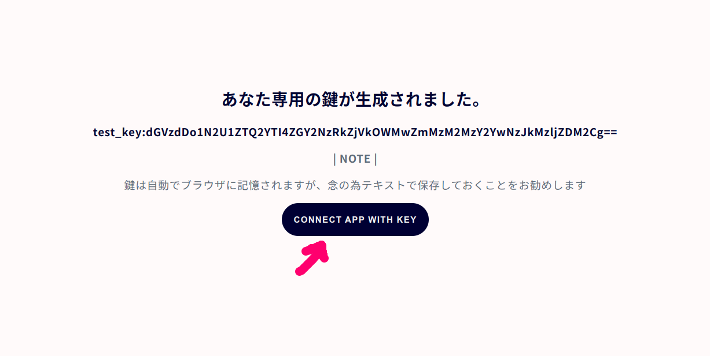
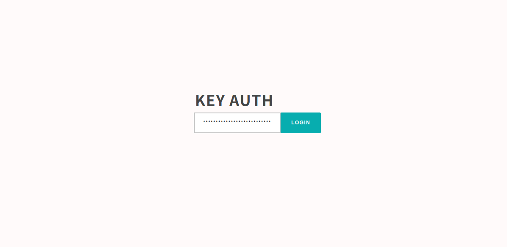

small shell Basic 1
スモールシェル
small shell(スモールシェル)はshellだけでWEBアプリケーションを書くことができるようにした、特異なフレームワークです。フレームワークというのはある一定の枠組みに従って進めると、一定のアウトプットがでるような一連の手続きのことを指します。手続きといっても、そう難しいものではなく、small shellにおいてはただコマンドを並べるだけであったり対話式のコマンドに答えるだけでWEBアプリケーションができあがります。
ジェネレーター
small shellでは"gen"コマンドによって様々なアプリケーションを生成することができますが、同時にデータを投入する箱も生成することができます。WEBアプリケーションがユーザーとの接続点となり、データの箱へのアクセスを提供するというのが基本的な構造になります。
--------- ---------------------------
| WEB APP | - | DATA BOX = データを入れる箱 |
--------- ---------------------------
Base APPの利用シナリオ
Base APP(ベースアプリ）はカスタマイズ不要な即席で生成できるWEBアプリケーションですが、WEBアプリケーション自体の特性であるデータの共有のしやすさや、オープンで共同作業をしやすいという性質を持ちます。その点においてチームによるデータ管理を行う際、Excel等のスプレッドシートよりも優れているといえるでしょう。Base APPは標準でAnd検索が可能で、Unix Basic 2コースでご紹介した高度なUnixコマンド群を使ったデータ分析も可能です。Formを用いることで外部からのデータ収集や依頼受付などもすることができます。本章ではBase APPを利用してデータを扱う方法を説明します。なお、以下高度な連携の実装については公式ホームページを参照ください。公式サイトは英語ですので、適時翻訳ツールで翻訳いただければと思います。
標準機能
- 容易なデータ共有と同時編集
- And検索など優れた検索とUnix/Linuxコマンドを用いた解析
- 適切なアクセス制御とログの取得
- Formによる適切なデータ入力とデータ収集
高度な連携
- システム統合(API,Job)
- python libraryを用いたgraphの定期作成など
クイックスタート
OS setup
small shellをインストールする前にLinux OSの基本設定から始めましょう、ここでは必要なOSユーザーを作成し、必要ライブラリを事前にインストールします
環境設定
# OSへのユーザーの追加
sudo useradd -s /sbin/nologin small-shell
# aptリストのアップデート
sudo apt update
# 各種ライブラリのインストール
sudo apt install curl
sudo apt install bc
sudo apt install cron
sudo apt install php
sudo apt install npm
sudo apt install jq
Note
以下のようにインストールを続行するか聞かれた場合はyを入力してください
Do you want to continue? [Y/n] y
(日本語の場合)
続行しますか? [Y/n] y
small shellのインストール
cd /usr/local
sudo git clone https://github.com/small-shell/small-shell.git
sudo chown -R small-shell:small-shell /usr/local/small-shell
Base APP生成
続いてgenコマンドでBase APPを生成していきましょう。以下の通り対話が始まりますので、それぞれ以下例にならって入力してください。なお、WEB server FQDN or IP addrという項目についてはip addressコマンドで確認したIPアドレスを入力する必要があるので注意してください。IPアドレスの確認についてはIPアドレスの表示を参照してください。 以下例では172.28.9.180をIPアドレスとして入力しています
$ sudo /usr/local/small-shell/adm/gen -app
Type of APP (1.BASE | 2.FORM | 3.SCRATCH): 1
Type of server (1.small-shell WEB srv | 2.other WEB srv): 1
Protocol (http | https): http
WEB Server FQDN or IP addr (e.g. 192.168.10.1): 172.28.9.180
WEBアプリの日本語化
生成したWEBアプリを日本語対応させるため、以下追加パッケージをインストールしましょう
$ cd $HOME
$ git clone https://github.com/naruoken/small-shell-apps
$ cd small-shell-apps/dictionary/JP
$ sudo ./deploy.sh
# small-shellのディレクトリpathに間違いなければenterを押してください
small-shell root (/usr/local/small-shell): <enter>
Base APPユーザー作成
続いてBase APPへアクセスするためのユーザーを作成しましょう、"ops"コマンドを使用することでユーザー作成ができます。あなたが管理者の場合アプリ利用者の人数分ユーザー作成をしてください。以下ではtestというユーザーを作成しています。
$ sudo /usr/local/small-shell/adm/ops add.usr:test
コマンドが正常に実行されると、作成したユーザー向けのinitialize URL(鍵の生成URL）が生成されますのでユーザーへURLを展開してください。ユーザーが initialize URLへ接続した際にアプリへのアクセスを可能にする鍵が生成されます。その際、管理者でも鍵の配列は予想することができません。以下はユーザーがinitialize URLへアクセスした際の画面です。"CONNECT APP WITH KEY"というボタンを押すとBase APPへ接続できます。URLは一回アクセスすると無効になるので気をつけてください

Base APPログイン
上記のとおり"CONNECT APP WITH KEY"ボタンをおすとログインフォームに飛びますが、ブラウザに保存された鍵が自動で入力されます。そのままBase APPへログインしましょう。その際、Base APPのログインURLはブラウザのお気に入りに登録しておくことをお勧めします
Note
windows WSLのlinuxやchromebook上のlinuxはPCのデスクトップ環境からしかアクセスできないため、インターネットや他のPCから生成したアプリにアクセスすることはできませんがご了承下さい。インターネット上でのアプリ公開やチームでのアプリ利用についてはsmall-shellの公開講座で別途ご説明します。

なお、現時点ではDataBoxを作成していないため利用できるデータがなく以下エラー画面が表示されます。一旦ブラウザを閉じてDataBoxの作成にすすみましょう。
データ構造の検討
BaseAPPは基本的にはDataBox(データボックス)を管理するためのアプリケーションですが、DataBoxは名前のとおりデータを入れるための箱といえます。箱をきちんと設計することでデータを整理して管理（蓄積・共有・更新）することができ、共同作業や仕事などで役立てることができます。
KeyとValue
DataBoxではkey(キー)とvalue(バリュー)という概念でデータを管理します。以下例では在庫管理のDataBoxを想定していますが、item_info(アイテム情報)という照会(key)に対して、"メーカーAのノートパソコン・・・・"という具体的な値(value)が返されます。
key : item_info
value : メーカーAのノートパソコン、在庫として10個ある
正規化とプライマリーキー
上記key valueの例ではvalueに様々な情報が含まれますが、フリーワード入力のようなかたちになるため、入力時の抜け漏れや検索時の情報の探しにくさなどに繋がります。そのため、目的に応じて複数のkeyを定義し、必須入力のkeyなどを場合によっては強制することでデータ管理が適切にできるようになります。
また、データを複数のkeyで構造的に管理する際、そのデータを一意で識別するためのkeyをprimary key (プライマリーキー)と呼びます。通常primary keyはアイテム名といった一意となるものを設定しますが、このようなキーを主キーと呼びます。
Note
一意となるkeyが選定できない場合などはhashidをprimary keyとして設定することができます。その場合はシステム側で自動で一意となるvalueをhashidに設定します。hashidの設定例はアンケートの収集で紹介されていますので、そちらを参照下さい。
item_infoを複数keyに厳密に分解していった例が以下となります
keys : item_name(primary_key), maker, CPU, Memory, HDD, model number, pc_type ...
上述のデータ構造までkeyを分割してしまうと、パソコン管理に限定したDataBoxになってしまうため用途が限定されてしまいます。small-shellではフラットな箱にデータを入れ直観的に管理することを目指していますので、最低限メーカー名は選択式にしてメーカー毎の検索ができる程度の、タイプもパソコンに限定せず汎用的なものにして、補足がnoteで入れられるような緩いデータを扱うこととしましょう。また、keyは基本的には英数字しか扱うことができないため、誰にでも理解しやすいlabelを定義しましょう。なお、*がついているkeyは必須入力のとします
#在庫データ
keys : item_name(primary_key), maker, type, num, note
label : アイテム名(型番)*, メーカー*, タイプ*, 在庫数*, 備考
DataBox生成
データ構造を比較的緩めなものにすると決まったところで、さっそくDataBoxを生成していきましょう、再びgenコマンドで簡単に生成できます。DataBox自体の名前はわかりやすくitem.dbとして、在庫管理のために使ってみましょう
sudo /usr/local/small-shell/adm/gen -databox
対話例は以下のとおりです。Do you want to add more column to datase？と聞かれた際にnoと答えると対話が終了しデータボックスが生成されます, またrequired to input each time?と聞かれてyesと答えると必須の入力項目としてBaseAPPで扱われます。通常のフィールドはフリーワードが登録できるtext、ある程度固定値にして検索性を高めたいフィールドにはselectを選択して固定値を指定しましょう
Note
対話を途中で抜けたい場合はCtrlとcを同時に押して抜けてください
Databox Name: item.db
primary_key(col1): item_name
primary_key label: アイテム名(型番)
Do you want to add column to dataset ? (yes | no): yes ※keyを追加しますかという意味です、以降もyesと答えてください
key(col2) name: type
key(col2) label: タイプ
Data Type (text | select | radio | checkbox | email | num | tel | date | date-time | url | textarea | file | pdls | mls): select
please define parameters using comma as separator: パソコン,モニター,アクセサリー,その他
key(col3) name: maker
key(col3) label: メーカー
Data Type (text | select | radio | checkbox | email | num | tel | date | date-time | url | textarea | file | pdls | mls): select
please define parameters using comma as separator: メーカーA社,メーカーB社,メーカーC社,その他
key(col4) name: num
key(col4) label: 在庫数
data type (text | select | radio | checkbox | email | num | tel | date | date-time | url | textarea | file | pdls | mls): num
Require to input each time? (yes | no): yes ※必須項目はyesとします
key(col5) name: note
key(col5) label: 備考
Data Type (text | select | radio | checkbox | email | num | tel | date | date-time | url | textarea | file | pdls | mls): text
Require to input each time? (yes | no): no
Do you want to add more column to dataset? (yes | no) : no
最終確認が求められるのでyesと答えてデータボックスを生成しましょう
Data box will be generated by following order, please check it
-----------------------------------------------------------------
Databox Name:item.db
#primary_key
name="item_name"
label="アイテム名(型番)"
type="text"
option="required"
#column2
name="type"
label="タイプ"
type="select"
params="パソコン,モニター,アクセサリー,その他"
option="required"
#column3
name="maker"
label="メーカー"
type="select"
params="メーカーA社,メーカーB社,メーカーC社,その他"
option="required"
#column4
name="num"
label="在庫数"
type="number"
option="required"
#column5
name="note"
label="備考"
type="text"
option=""
-----------------------------------------------------------------
Is it OK? (yes | no): yes
DataBoxへのアクセス
DataBoxが生成されたら早速BaseAPPをつうじてデータへアクセスしましょう。Base APPへは/baseというパスでログイン可能です。以下例では先程Base APPに設定したIPアドレスである172.28.9.180を使用しています
http://172.28.9.180/base

早速+ADDボタンからアイテムを登録しましょう

Keyの追加削除
データボックスにkeyを追加、削除したい場合もgenコマンドを利用します。追加、削除はそれぞれ以下オプションで実行してください。その後対話が開始します
# 追加
sudo /usr/local/small-shell/adm/gen -addcol
# 削除
sudo /usr/local/small-shell/adm/gen -delcol
テーブル
ログイン後に表示されるテーブルではデータの検索やソートが非常に簡単に行うことができます。標準でAnd条件の検索が可能ですのでGoogle検索のような感覚でデータを探すことができます。
単純検索
単語をサーチボックスに入力してエンターを押すとフリーワード検索ができます
And検索ももちろん可能です
並び替え
Unixのsortコマンドを使ったsortもTable上で可能ですのでお試しください。sortの基本的なオプションは以下です
# 自然な昇順並び替え
sort -V Label名
# アルファベット降順並び替え
sort -r Label名
# 数字の昇順並び替え
sort -n Label名
# 数字の降順並び替え
sort -nr Label名
タグ
Tableに定型的なフィルターをかけたい場合Tagを追加することができます。以下例ではメーカーAというワードでタグを作っていますが、タグをクリックするとitem.dbの中からメーカーAというワードを含んだデータが検索されます。add.tagで追加、del.tagで削除できます
sudo /usr/local/small-shell/adm/ops add.tag:$databox{word}
(e.g.)
sudo /usr/local/small-shell/adm/ops add.tag:item.db{メーカーB}
sudo /usr/local/small-shell/adm/ops del.tag:item.db{メーカーB}

さらにkeyを指定したフィルターを設定することもできます。その場合は databox{key{ワード}}として設定して下さい。以下例ではタグをクリックするとitem.dbの全フィールドではなく、typeを指定したうえでパソコンという値をもったデータを検索できます
sudo /usr/local/small-shell/adm/ops add.tag:$databox{key{word}}
(e.g.)
sudo /usr/local/small-shell/adm/ops add.tag:item.db{type{パソコン}}
sudo /usr/local/small-shell/adm/ops del.tag:item.db{type{パソコン}}

行数指定
Tableの行数を指定したい場合、#line:行数と検索バーに入力することで行数が指定できます。検索結果の表示行数を変えたい場合は検索ワードのあとにスペースをあけて#line:行数を指定してください
例：テーブルを20行にしたい場合の指定
#line:20
例：検索結果を100行表示したい場合の指定
検索ワード #line:100
コンソールによる分析
メニューからコンソールへ遷移すると、高度なUnixコマンドとして紹介した各種コマンドを使った分析ができます。以下はDataBoxをパソコンというワードでgrepし、件数をwcで集計する例になります
grep パソコン | wc -l
ログ検索
Consoleではログの検索を行うこともできます。ログ検索であることを明示するため検索実行時は#logを付与してください、以下は "メーカーAノートパソコン #log"と検索した例です
P123 #log

ダウンロード / 一括更新
DataBoxのデータをWEB上からダウンロードすることやimportで一括更新することができます。Table viewの#csvリンクからcsvデータをダウンロードし、更新後のデータをimportメニューから一括更新してみましょう
Note
primary keyをhashidとした場合で、新規データをファイルimportにより登録したい場合hashidの値は一律newとしてください、その後自動採番されます
Initialize URLの再生成
鍵は基本的にブラウザに自動保存されますが、もしも鍵をなくしてしまったりBase APPのURLがわからなくなった場合は再度鍵を生成しましょう。以下はtestユーザーの鍵生成URLを再作成している例です
sudo /usr/local/small-shell/adm/ops initialize.usr:test
以上がBaseAPPをもちいたデータ管理方法についての説明になりますが、次章以降ではさらに多機能なアプリを自動生成する方法や、情報をまとめてポータル（ホームページのようなもの）で管理する方法をご説明します